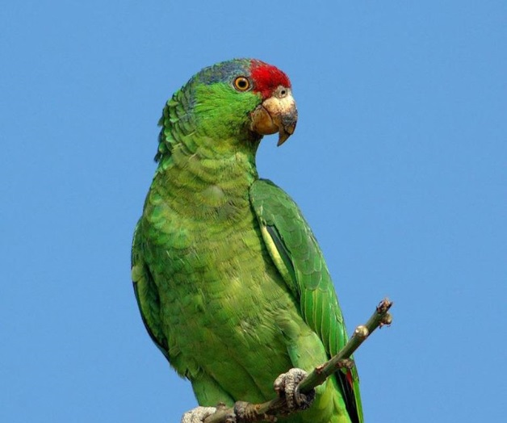

Loro
Los psitacoideos (Psittacoidea) son una superfamilia del orden Psittaciformes, que incluye los loros típicos, un total de 369 especies. Los loros típicos son más numerosos y están más extendidos que las otras superfamilias de psitaciformes, las cacatúas y los escasos y confinados loros de Nueva Zelanda, ya que tienen representantes en América, África, Asia y Oceanía (desde Australia hasta la Polinesia).
Taxonomía
Con anterioridad, los loros típicos se agrupaban en una sola familia (Psittacidae), que se dividía en dos subfamilias: Psittacinae (donde se incluía a todos los loros menos a los loris) y Loriinae (los loris). Actualmente el grupo se ha reestructurado, pasando a ser una superfamilia que se divide en tres familias: Psittacidae (loros de América y África), Psittrichasiidae (loro aguileño y afines) y Psittaculidae (loros de Asia y Oceanía, además de las especies pequeñas de África).
Descripción
Los loros se caracterizan por tener un pico curvado, con una mandíbula inferior con cierta movilidad en su conexión con el cráneo y situada en una posición bastante vertical. Además tienen una gran capacidad craneal y son uno de los grupos de aves más inteligentes. Son aves que vuelan bien y son capaces de agarrarse a las ramas de los árboles y trepar por ellas con destreza, gracias a sus garras prensiles zigodáctilas (con dos dedos hacia delante y dos hacia atrás).
Otra característica de los loros es la intensa coloración de su plumaje. El color predominante del plumaje de los loros es el verde, aunque la mayoría de las especies tienen además algo de rojo, azul, amarillo y otros colores en diversas cantidades. La coloración de las plumas de los loros se debe tanto a los pigmentos como a estructuras especiales de sus plumas, como la textura de Dyck, que dispersan la luz originando la aparición de colores como el azul (componente fundamental del verde). Se diferencian de sus parientes las cacatúas en que carecen de sus característicos penachos eréctiles en la cabeza. También difieren de ellas en las tonalidades del plumaje, las cacatúas son predominantemente blancas o negras, y aunque también pueden presentan colores rosados, rojos, amarillos o anaranjados, las cacatúas carecen por completo de los tonos verdes y azules en sus plumajes.
La mayoría de los loros típicos se alimentan principalmente de semillas. Existen algunas variaciones individuales entre especies que además incluyen en su dieta frutos, hojas, insectos y otras pequeñas presas ocasionalmente. Los loris son predominantemente nectarívoros, aunque otras especies también consumen néctar ocasionalmente.
Los miembros de Psittacoidea son especies predominantemente monógamas que suelen anidar en cavidades, tanto de los árboles como en túneles escavados en terraplenes.
Algunas especies pueden imitar gran diversidad de sonidos, incluida la voz humana, aunque no tienen cuerdas vocales sino que usan un órgano situado en la base de la tráquea conocido como siringe.
Distribución y hábitat
Generalmente viven en regiones tropicales o cálidas. Los loros se extienden por el hemisferio sur, además de la región tropical y subtropical del hemisferio norte, distribuidos por el sur de Asia, el África subsahariana, Oceanía, América del Sur y Central, y en el pasado había una especie nativa de Norteamérica, el lorito de Carolina extinto en época histórica. Aunque las mayores poblaciones nativas son las de Australasia, América del Sur y América Central. Los loros ocupan un gran espectro de hábitats desde la selva húmeda tropical hasta los desiertos del interior de Australia.
Muchas especies del grupo están clasificadas en peligro de extinción. La captura de loros salvajes para el tráfico de mascotas (que sufren más que las demás aves), la destrucción de su hábitat y la competencia con especies invasoras, han disminuido las poblaciones salvajes. Esta combinación de factores ha expulsado a muchas especies de la mayor parte del área de distribución que tenían a principios del siglo XX. Por ejemplo, la cotorra margariteña, que sobrevive en la principal isla de Venezuela, es actualmente el psitácido más amenazado de ese país y sobrevive en contadas comunidades. Muy pocos de los ejemplares sacados de su hábitat natural sobrevive a su captura, transporte y al estrés que sufren en cautividad. Las medidas tomadas para conservar el hábitat de algunas de estas especies carismáticas y llamativas también han protegido a otras especies del mismo ecosistema
Aunque la mayoría de los loros están disminuyendo sus áreas de distribución debido a la deforestación y la presión humana, unas pocas especies están aprovechando la acción de los humanos para expandirse. Varias especies que fueron importadas como mascotas a Europa y Norteamérica han conseguido establecerse allí al escaparse o ser liberadas, especialmente las de pequeño tamaño procedentes de hábitat abiertos subtropicales. La cotorra monje y la cotorra de Kramer se han asilvestrado con éxito en colonias estables alrededor de multitud de ciudades de Europa. Estas dos cotorras también están colonizando algunas zonas del sur de Norteamérica junto a un puñado de miembros del género Amazona, el inseparable de Namibia, el aratinga de Guayaquil o el periquito común. También se han producido introducciones en Nueva Zelanda, como la del lori arcoíris o el perico multicolor.